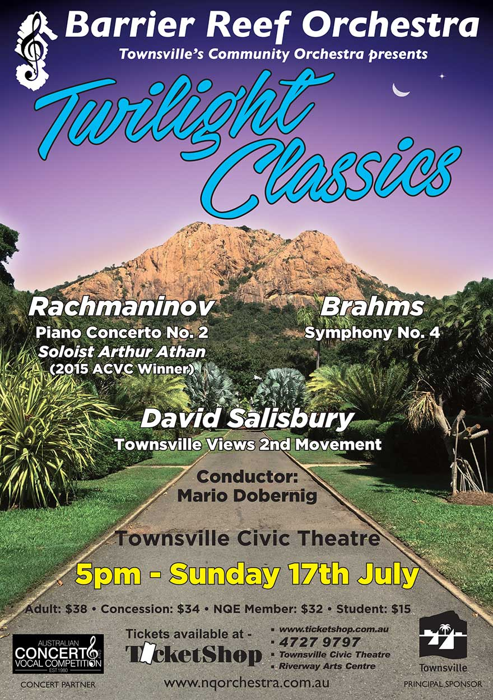

Twighlight Classics

Sunday 17 July 20165.00pm
Townsville Civic Theatre
Join us an evening of drama, romance, hope and serenity as we delve into some of history’s favourite musical masterpieces.
Guest artist Arthur Athan, 2015 Australian Concerto and Vocal Competition winner, will deliver all of the fire and passion of Rachmaninoff’s second piano concerto. Be swept away by the broad brush strokes of Brahms’ fourth symphony, and hear one of Townsville’s very own as we explore David Salisbury’s ‘Townsville Views’ Symphony.
Conductor: Mario Dobernigc
Soloist: Arthur Athan (winner Australian Concerto & Vocal Competition 2015 Open Instrumental section)
Program:
Johannes Brahms: Symphony No. 4 in E Minor, Op 98David Salisbury: Symphony No. 1: Townsville Views – Movement 2 (Queens Gardens).
Sergei Rachmaninov: Piano Concerto No. 2 in C Minor Op 18.
Concert Master: Stephen Frewen-Lord
Rehearsal Conductors: Andrew Ryder, Ben Fixter
Violin I: Stephen Frewen-Lord, Hannah Curnow, Stacey Lun, Paul Allen, Julia Ramsbotham, Alison Brown*
Violin II: Alexandra Gorton, Melanie Laird, Karly Radford, Susan Fraser, Suva Leitch, Emily Robson.
Viola: Lotta Lindgren, Dannielle Smith* Emily Matthews, Adian Fitzgerald.
Cello: Ivy Wu, Patrick Murphy, Carole Radovanovic, Margaret Loftus, Rebecca Marki, Michelle Heijneman, Una Galvin, Michael Carroll.
Double Bass: Katryn Strong,* Stephen Kluver, Emma Wootton.
Flute: Shinako MacDonald, Cassandra Cooper.
Piccolo: Cassandra Cooper
Oboe: Bernie Gillard* Keelie McKenzie
Clarinet: Monica Ward, Rianta Belford
Bassoon: Sarah Hill, Helen Land
Horn: Andrew Ryder, Annie Doherty, Amy Gutterson, Daniel Harley.
Trumpet: Ben Fixter, Shelley Gardner.
Trombone: Emi Myosi, Mark Land, Amy Windsor.
Tuba: Andrew Hodgson
Timpani: Noel Price
Auxiliary Percussion: Ruby Ansic
*Brisbane ^Melbourne